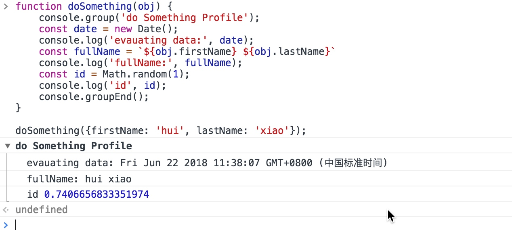
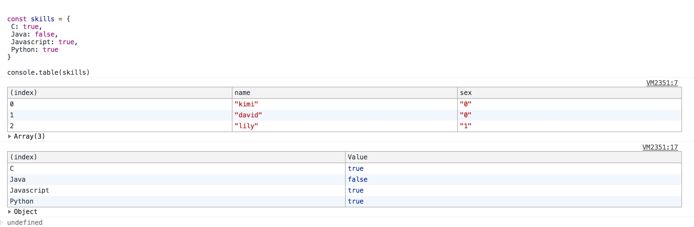
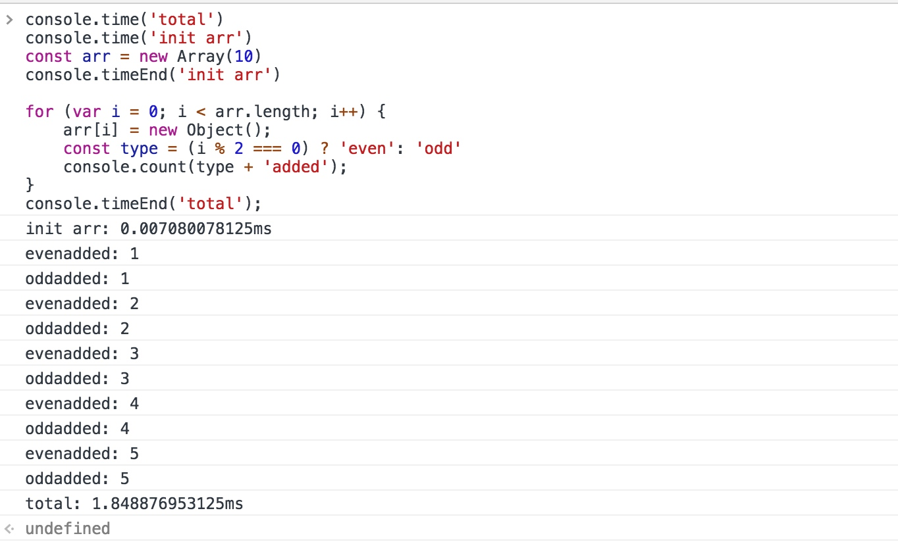
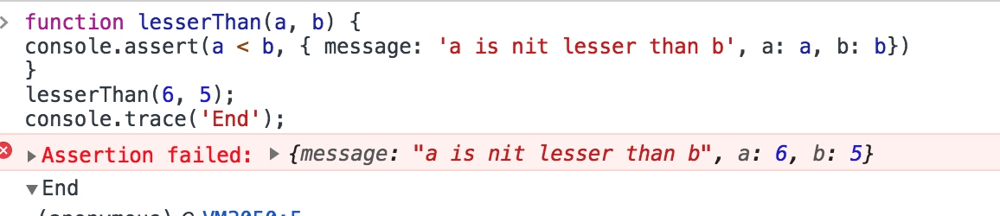

用 Javascript console 提高开发效率
作为开发者，我们开发中用的最多的是 console.log 。但是还有更多的更适合的方式去打印我们想要输出的内容
Console.log, Console.error, Console.warn and Console.info 的显示方式

Console.group
这个方法可以将系列的console.log(包括错误信息等)集合到一个组内，并且可以展开折叠。这个语法非常简单： 在console.group) 之后输入所有想分为一组的console ，然后用console.groupEnd() 结束这个分组。
function doSomething(obj) {
console.group('do Something Profile');
const date = new Date();
console.log('evauating data:', date);
const fullName = `${obj.firstName} ${obj.lastName}`
console.log('fullName:', fullName);
const id = Math.random(1);
console.log('id', id);
console.groupEnd();
}
doSomething({firstName: 'hui', lastName: 'xiao'});
运行结果如下：

Console.table
console.table 很强大，它可以展示非常大的JSON 数组，以往我们在console.log 里面输出它们阅读性很差。而console.table 可以生成很美观的table 数据表，可以命名这些列并将它们作为参数传递。
const sexList = [
{ name: 'kimi', sex: '0'},
{ name: 'david', sex: '0'},
{ name: 'lily', sex: '1'}
]
console.table(sexList)
const skills = {
C: true,
Java: false,
Javascript: true,
Python: true
}
console.table(skills)
运行结果如下：

Console.count, Console.time and Console.timeEnd
这三个方法是每个开发者在debug 时，都需要掌握的利器。
console.count 用来统计代码被执行的次数。console.time 计时器，搭配console.timeEnd，可以用来记录某个方法从开始到结束运行的时间。并将已用的时间打印打印到控制台上。
console.time('total')
console.time('init arr')
const arr = new Array(10)
console.timeEnd('init arr')
for (var i = 0; i < arr.length; i++) {
arr[i] = new Object();
const type = (i % 2 === 0) ? 'even': 'odd'
console.count(type + 'added');
}
console.timeEnd('total');
运行结果如下：

Console.trace and Console.assert
这些方法从被调用的地方打印堆栈跟踪。例如写的一个 JS =库，想告诉用户错误产生的地方。 在这种情况下，这些方法很有用。 console.assert与console.trace类似，但只有在传递条件未通过时才会打印。
function lesserThan(a, b) {
console.assert(a < b, { message: 'a is nit lesser than b', a: a, b: b})
}
lesserThan(6, 5);
console.trace('End');
运行结果如下：

删除控制台内容
控制台输出内容，会给我们的开发过程提供便利，但是有时候我们并不希望开发时所打印的log 在生产环境中显示。因此不能滥用控制台，应该在开发模式下保留错误日志或跟踪日志，在生产环境删除这些日志。这里可以用webpack 的uglifyjs-webpack-plugin 删除生产环境不想保留的控制台输出：
const UglifyJsPlugin = require('uglifyjs-webpack-plugin')
var debug = process.env.NODE_ENV !== "production";
.....
optimization: {
minimizer: !debug ? [
new UglifyJsPlugin({
// Compression specific options
uglifyOptions: {
// Eliminate comments
comments: false,
compress: {
// remove warnings
warnings: false,
// Drop console statements
drop_console: true
},
}
})] : []
}
这样就可以在开发环境开开心心的打印log 了。但是无用的log 请不要提交到生产，保持代码的干净整洁。